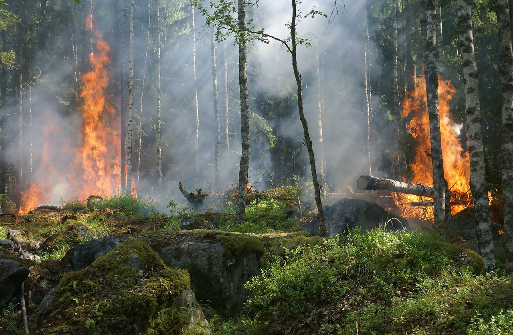

Os bombeiros desempenham um papel fundamental no combate a incêndios, e o uso de tecnologias emergentes tem revolucionado suas operações, aumentando sua eficácia e segurança. Com o avanço da tecnologia, os bombeiros estão cada vez mais equipados com dispositivos e sistemas inovadores que os auxiliam em todas as fases do combate ao fogo, desde a detecção precoce até a extinção e monitoramento pós-incêndio. Uma das tecnologias mais impactantes é o uso de drones. Equipados com câmeras de alta resolução, sensores térmicos e sistemas de mapeamento 3D, os drones oferecem uma visão aérea detalhada e em tempo real das áreas afetadas pelo fogo. Isso permite aos bombeiros detectar incêndios em estágios iniciais, fornecer informações precisas sobre a extensão e intensidade do fogo, e avaliar as condições do terreno, possibilitando uma resposta mais rápida e eficiente. Além disso, alguns drones são capazes de lançar água ou retardantes de chama diretamente sobre as chamas, o que pode ser crucial para conter o avanço do incêndio em áreas de difícil acesso. Outra tecnologia importante é o desenvolvimento de sistemas de previsão e modelagem de incêndios. Usando dados meteorológicos, topográficos e históricos, esses sistemas podem prever a propagação do fogo com uma precisão impressionante, permitindo que os bombeiros antecipem a direção do incêndio e planejem suas estratégias de combate de forma mais eficaz. Além disso, esses sistemas também podem ser integrados com os drones, fornecendo informações em tempo real para ajustar as táticas de combate conforme necessário.No campo da proteção pessoal, os bombeiros estão adotando equipamentos avançados, como trajes de proteção térmica e respiradores de última geração, que não apenas os mantêm seguros em ambientes de alta temperatura e fumaça densa, mas também os permitem operar por períodos mais longos sem comprometer sua saúde. Além disso, dispositivos de comunicação avançados, como rádios de banda larga e sistemas de comunicação por voz sobre IP, permitem uma coordenação mais eficiente entre as equipes no terreno e os comandantes de operações, melhorando a segurança e a eficácia das operações de combate a incêndios.A tecnologia também desempenha um papel crucial no pós-incêndio, facilitando a avaliação de danos, a identificação de pontos quentes e a análise de riscos de desabamentos. Sistemas de sensoriamento remoto, como satélites e aeronaves equipadas com sensores especializados, podem mapear áreas afetadas pelo fogo e identificar locais de risco, permitindo uma resposta rápida para mitigar possíveis danos adicionais. Além disso, sistemas de análise de dados e inteligência artificial podem processar grandes volumes de informações coletadas durante o combate ao incêndio, fornecendo insights valiosos para melhorar as estratégias de prevenção e resposta a incêndios no futuro. No entanto, apesar de todos esses avanços tecnológicos, é importante ressaltar que a habilidade e o heroísmo dos bombeiros continuam sendo os pilares fundamentais no combate a incêndios. A tecnologia pode ser uma aliada poderosa, mas são as habilidades, o treinamento e a coragem dos bombeiros que realmente fazem a diferença quando se trata de salvar vidas e proteger comunidades contra os devastadores efeitos dos incêndios. Fonte: Imagem de Ylvers por Pixaba
O uso de drones no combate a incêndios tem se mostrado uma ferramenta extremamente eficaz e inovadora. Equipados com câmeras de alta resolução e tecnologia de imagem térmica, esses drones fornecem uma visão aérea em tempo real, permitindo uma detecção precoce de incêndios florestais e urbanos. Além disso, eles podem sobrevoar áreas de difícil acesso, proporcionando informações detalhadas para os bombeiros sobre a extensão do incêndio e as condições do terreno, auxiliando na tomada de decisões estratégicas para conter o fogo. Além disso, alguns drones são capazes de lançar água ou retardantes de chama, ajudando no resfriamento de áreas críticas e na criação de barreiras preventivas. Assim, o emprego dessas tecnologias tem se mostrado crucial para aumentar a eficiência e a segurança das operações de combate a incêndios. Fonte das imagens: https://blog.climatefieldview.com.br/geoprocessamento-agricultura e https://energiainteligenteufjf.com.br/meio-ambiente/utilizacao-de-drones-no-combate-a-queimadas-brasileiras/
O geoprocessamento desempenha um papel crucial no combate aos incêndios, fornecendo ferramentas e técnicas essenciais para a detecção, monitoramento e gestão eficaz dessas ocorrências. Através do uso de sistemas de informações geográficas (SIG), imagens de satélite, dados topográficos e meteorológicos, os profissionais envolvidos no combate a incêndios podem analisar e visualizar informações geoespaciais em tempo real. Isso permite uma detecção precoce de focos de incêndio, facilita o planejamento de rotas de acesso e evacuação, e ajuda na identificação de áreas de risco e vulnerabilidade. Além disso, o geoprocessamento é fundamental para o monitoramento da propagação do fogo, permitindo aos bombeiros prever sua trajetória e intensidade com base em fatores como vento, topografia e vegetação. Essa capacidade de análise espacial também é crucial no planejamento de estratégias de combate, alocação de recursos e evacuação de comunidades em perigo. Em suma, o geoprocessamento desempenha um papel essencial na resposta eficaz a incêndios, proporcionando aos profissionais as ferramentas necessárias para tomar decisões informadas e coordenar operações de forma mais eficiente e segura. Fonte da imagem: Imagem de Ylvers por Pixabay
Os brigadistas desempenham um papel fundamental na prevenção e combate a incêndios florestais, e o uso de tecnologia tem se mostrado cada vez mais importante para melhorar suas capacidades e eficiência. Equipados com dispositivos modernos, os brigadistas podem monitorar áreas propensas a incêndios, detectar focos de fogo de forma precoce e coordenar a resposta de forma mais eficaz. Uma das tecnologias mais utilizadas pelos brigadistas é o uso de drones equipados com câmeras de alta resolução e sensores térmicos. Esses drones oferecem uma visão aérea detalhada e em tempo real das áreas afetadas pelo fogo, permitindo uma detecção rápida e precisa de focos de incêndio, mesmo em terrenos de difícil acesso. Além disso, os drones podem sobrevoar grandes áreas em pouco tempo, fornecendo informações cruciais para o planejamento de estratégias de combate. Fonte da imagem: Imagem de Ronald Plett por Pixabay